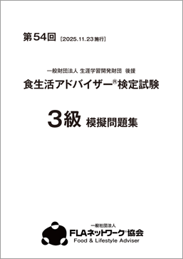
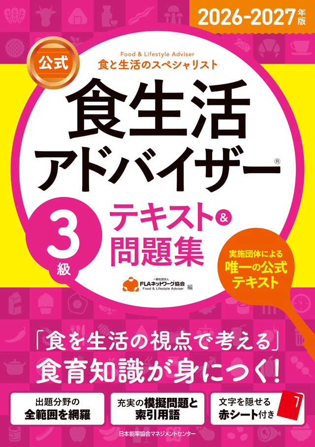

3級の合格講座
3級の合格講座は1日超集中の速習コースのみとなっております。
3級合格講座はこんな方にオススメです。
-
「速習コース」は、短期決戦で合格を目指す方、効率的な学習を望まれる方、3級・2級のダブル受講をお考えの方にぜひおすすめの講座です。
-

「合格講座」の特典として配布される、本番の試験を想定した「模擬問題集」を活用しながら学習することで合格を勝ち取ります。
速習コース・3つの特徴
- 1日で完結する短期集中型授業！
- 「東京・名古屋・大阪・福岡」4都市で実施
- 日程を変えて3級・2級のダブル受講ができる！
特典
合格講座速習コース模擬問題集（講座当日配布します）
- 
3級の合格率

実施会場
【2025年 第54回】
| 会場名 | 開講日 | 使用施設 | |
|---|---|---|---|
| 東京 | ① 11/1(土) | 連合会館 | |
| ② 11/2(日) | |||
| ③ 11/15(土) | ワイム貸会議室 高田馬場 |
||
| ④ 11/16(日) | |||
| 名古屋 | ① 11/1(土) | ウインクあいち | |
| ② 11/2(日) | |||
| 福岡 | ① 11/1(土) | リファレンス駅東ビル | |
| ② 11/2(日) | |||
| 大阪 | ① 11/1(土) | 大阪府教育会館 | |
| ② 11/2(日) | |||
※いずれも1日で完結します。
※会場は変更になる場合がございます。
※講座会場の詳細は受講票でご確認ください。
時間
（全会場・全日程共通予定）
| 午前 | 10時20分～12時50分 |
|---|---|
| お昼休み | 12時50分～13時40分 |
| 午後 | 13時40分～16時10分 |
※ 午前、午後それぞれ3科目ずつ授業を進めます。
申込方法
クレジットカード申込み、または専用の振込取扱票からのお手続きとなります。
クレジットカードによるお申し込みは、TOP画面のクレジット申込からお申込ください。
払込取扱票によるお申込みは、検定事務局から送られてくる受験案内に同封の専用払込取扱票（願書）に必要事項を記入し、ゆうちょ銀行または郵便局にて受講料をお振込ください。
※払込取扱票は、願書請求をされた方に送付いたします。
受講料
- 3級：13,000円（税込）
合格講座指定教材
※ 必ず事前に書店にてお買い求めいただき、ご持参ください。
講座当日の販売はいたしません
-

2024-2025年版[公式]食生活アドバイザー®
3級 テキスト＆問題集
（ 日本能率協会マネジメントセンター）
2024-2025年版[公式]「食生活アドバイザー® テキスト＆問題集」です。
お間違いないようお買い求めください。